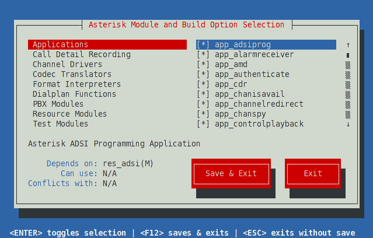

Using Menuselect
The next step in the build process is to tell Asterisk which modules to compile and install, as well as set various compiler options. These settings are all controlled via a menu-driven system called Menuselect. To access the Menuselect system, type:
[root@server asterisk-14.X.Y]# make menuselect
The Menuselect menu should look like the screen-shot below. On the left-hand side, you have a list of categories, such as Applications, Channel Drivers, and PBX Modules. On the right-hand side, you'll see a list of modules that correspond with the select category. At the bottom of the screen you'll see two buttons. You can use the Tab key to cycle between the various sections, and press the Enter key to select or unselect a particular module. If you see [*] next to a module name, it signifies that the module has been selected. If you see *XXX next to a module name, it signifies that the select module cannot be built, as one of its dependencies is missing. In that case, you can look at the bottom of the screen for the line labeled Depends upon: for a description of the missing dependency.

When you're first learning your way around Asterisk on a test system, you'll probably want to stick with the default settings in Menuselect. If you're building a production system, however, you may not wish to build all of the various modules, and instead only build the modules that your system is using.
When you are finished selecting the modules and options you'd like in Menuselect, press F12 to save and exit, or highlight the Save and Exit button and press enter.
Module Support Levels
Menuselect will also show the support level for a selected module or build option. The support level will always be one of core, extended, or deprecated. For more information on these support levels, see Asterisk Module Support States.
Menuselect Categories
| Category | Description |
|---|---|
| Add-ons | Modules that link with libraries that have licensing restrictions beyond what is allowed via the GPLv2 and Asterisk's dual licensing model. See README-addons.txt, delivered with Asterisk, for more information. |
| Applications | Modules that provide call functionality to the system. An application might answer a call, play a sound prompt, hang up a call, and so forth. |
| Bridging Modules | Modules that provide various bridge mixing technologies and other bridge related functionality. |
| Call Detail Recording | Modules that provide Call Detail Record (CDR) drivers for various permanent storage backends. |
| Channel Event Logging | Modules that provide Channel Event Logging (CEL) drivers for various permanent storage backends. |
| Channel Drivers | Modules that provide communications with devices outside of Asterisk, and translate that particular signalling or protocol to the core. |
| Codec Translators | Modules that provide encoding/decoding for audio or video. Typically codecs are used to encode media so that it takes less bandwidth. |
| Format Interpreters | Modules used to save media to disk in a particular file format, and to convert those files back to media streams on the network. |
| Dialplan Functions | Modules that are used to retrieve or set various settings on a call. A function might be used to set the Caller ID on an outbound call, for example. |
| PBX Modules | Modules that implement dialplan functionality or enhancements. |
| Resource Modules | Modules that provide additional resources to Asterisk. This can includes music on hold, calendar integration, database integration, various protocol stacks, etc. |
| Test Modules | Unit test modules. These are typically only available when Asterisk has:
|
| Compiler Flags - Development | Various compilation flags that alter Asterisk's behaviour. These flags are often useful in debugging Asterisk, or obtaining information for Asterisk developers. |
| Voicemail Build Options | Compilation flags that enable different Voicemail (via app_voicemail) storage backends. |
| Utilities | Various utilities for Asterisk. These include Asterisk Database upgrade utilities, Asterisk monitoring utilities, and other potentially useful tools. |
| AGI Samples | Sample AGI applications. |
| Module Embedding | Compilation flags to enable embedding of Asterisk dynamic modules into the Asterisk binary. |
| Core Sound Packages | Core sounds used by Asterisk. Different sound formats can be selected in this menu; when Asterisk is installed, these sounds will be downloaded and installed. |
| Music On Hold File Packages | Sample Music on Hold media used by Asterisk. Different formats can be selected in this menu; when Asterisk is installed, the various media samples will be downloaded and installed. |
| Extras Sound Packages | Extra sounds that can be used by Asterisk integrators. Different sound formats can be selected in this menu; when Asterisk is installed, these sounds will be downloaded and installed. |
Controlling Menuselect
Options in Menuselect can be controlled from the command line. Menuselect can be built without invoking the user interface via the menuselect.makeopts target:
[root@server asterisk-14.X.Y]# make menuselect.makeopts
Available options can be viewed using the --help command line parameter:
[root@server asterisk-14.X.Y]# menuselect/menuselect --help
Some of the more common options are shown below.
Listing Options
To list all options in Menuselect, use the --list-options command line parameter:
[root@server asterisk-14.X.Y]# menuselect/menuselect --list-options
To list only the categories, use the --category-list command line parameter:
[root@server asterisk-14.X.Y]# menuselect/menuselect --category-list MENUSELECT_ADDONS MENUSELECT_APPS MENUSELECT_BRIDGES MENUSELECT_CDR MENUSELECT_CEL MENUSELECT_CHANNELS MENUSELECT_CODECS MENUSELECT_FORMATS MENUSELECT_FUNCS MENUSELECT_PBX MENUSELECT_RES MENUSELECT_TESTS MENUSELECT_CFLAGS MENUSELECT_OPTS_app_voicemail MENUSELECT_UTILS MENUSELECT_AGIS MENUSELECT_EMBED MENUSELECT_CORE_SOUNDS MENUSELECT_MOH MENUSELECT_EXTRA_SOUNDS
To list the options in a category, use the --list-category command line parameter:
[root@server asterisk-14.X.Y]# menuselect/menuselect --list-category MENUSELECT_OPTS_app_voicemail + FILE_STORAGE - ODBC_STORAGE - IMAP_STORAGE
Enabling an Option
To enable an option in Menuselect, use the --enable command line parameter:
[root@server asterisk-14.X.Y]# menuselect/menuselect --enable IMAP_STORAGE menuselect.makeopts
Disabling an Option
To disable an option in Menuselect, use the --disable command line parameter:
[root@server asterisk-14.X.Y]# menuselect/menuselect --disable app_voicemail menuselect.makeopts
Enabling a Category
An entire category can be enabled in Menuselect using the --enable-category command line parameter:
[root@server asterisk-14.X.Y]# menuselect/menuselect --enable-category MENUSELECT_ADDONS menuselect.makeopts
{kind=link}